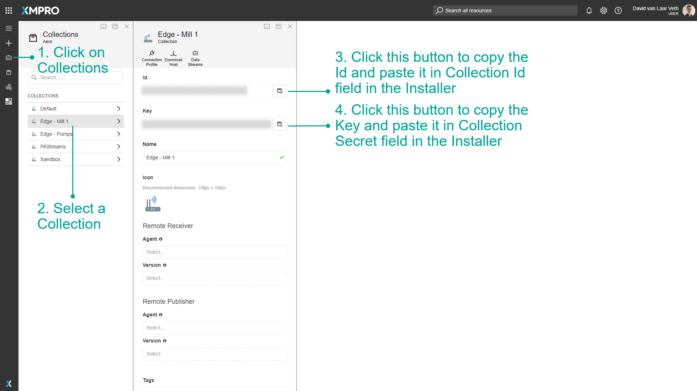

Stream Host Azure Terraform
Overview
This guide explains how to deploy an XMPro Stream Host using the Azure Terraform module. A Stream Host is a containerized runtime that executes data streams created in Data Stream Designer (DS). You can deploy a single Stream Host or multiple Stream Hosts for horizontal scaling.
The Azure Terraform module uses a layered architecture that separates infrastructure from applications. This approach allows you to:
- Deploy a Stream Host as part of the full XMPro platform deployment
- Deploy multiple Stream Hosts for horizontal scaling, edge processing, or regional distribution
- Update Stream Hosts independently without affecting the underlying infrastructure
This guide covers both deploying a Stream Host with the full platform and deploying additional Stream Hosts to connect to an existing DS instance.
Prerequisites
This section lists the requirements for deploying a Stream Host using Terraform. The requirements differ depending on whether you are deploying as part of a full platform installation or connecting to an existing DS instance.
Before deploying a Stream Host, ensure you have completed the Azure Terraform prerequisites, which cover:
- Terraform version 1.0 or later
- Azure CLI setup and authentication
- Azure subscription requirements
For Standalone Stream Host Deployment
When connecting a Stream Host to an existing DS instance rather than deploying the full platform, you need additional information from your DS administrator.
If you are connecting a Stream Host to an existing DS instance, you also need:
- The URL of your existing DS instance
- Collection ID and Collection Secret from your DS instance (see Getting Collection Credentials)
Sizing Recommendations
The Terraform module allows you to configure Stream Host resources based on your workload:
| Workload Type | CPU Cores | Memory (GB) | Use Case |
|---|---|---|---|
| Small (Default) | 1 | 4 | Light data processing, few agents |
| Medium | 2 | 8 | Moderate workloads, multiple agents |
| Large | 4 | 16 | Heavy processing, complex transformations |
Configuration Limits:
- CPU: 0.25 to 4 cores
- Memory: 0.5 to 16 GB
Tip
Start with the default configuration (1 CPU, 4 GB RAM) and scale up based on monitoring metrics.
Layered Architecture Overview
The XMPro Terraform module uses a layered architecture that separates infrastructure from applications:
terraform-xmpro-azure/
├── _infra/ # Infrastructure layer (deploy first)
│ └── ... # Resource groups, databases, storage, etc.
├── _app/ # Application layer (deploy second)
│ └── stream-host-container/ # Stream Host module
└── examples/
└── layered/
├── infra/ # Infrastructure configuration
└── app/ # Application configuration (includes Stream Host)
Benefits:
- Independent Lifecycles: Update a Stream Host without affecting infrastructure
- Scalable: Deploy multiple Stream Hosts easily
- Team Separation: Platform teams manage infrastructure, dev teams manage applications
The following deployment options show how to use this layered architecture for different scenarios.
Deployment Options
Option 1: Stream Host with Full XMPro Platform
When deploying the complete XMPro platform using the layered architecture, Stream Host is automatically included when create_stream_host = true (the default).
Step 1: Deploy Infrastructure Layer
cd examples/layered/infra
cp terraform.tfvars.example terraform.tfvars
# Edit terraform.tfvars with your configuration
terraform init
terraform plan
terraform apply
# Save outputs for application layer
terraform output -json > ../app/infra-outputs.json
Step 2: Deploy Application Layer (includes Stream Host)
cd ../app
cp terraform.tfvars.example terraform.tfvars
# Edit terraform.tfvars using outputs from Step 1
terraform init
terraform plan
terraform apply
The application layer automatically:
- Creates a Stream Host container instance
- Connects it to the deployed DS
- Configures monitoring and logging
Option 2: Multiple Stream Hosts
Deploy additional Stream Host containers for horizontal scaling, edge processing, or regional deployments.
In your app/terraform.tfvars, configure the stream_hosts map:
# Primary Stream Host (always created when create_stream_host = true)
create_stream_host = true
# Additional Stream Hosts
stream_hosts = {
"sh01" = {
collection_id = "your-collection-id-from-ds"
collection_secret = "your-collection-secret-from-ds"
cpu = 2
memory = 8
variant = "bookworm-slim-python3.12"
environment_variables = {
SH_PIP_MODULES = "pandas numpy scikit-learn"
}
}
"sh02" = {
collection_id = "another-collection-id"
collection_secret = "another-collection-secret"
cpu = 1
memory = 4
}
}
Each Stream Host requires unique collection credentials from DS.
Getting Collection Credentials
For deployments connecting a Stream Host to an existing DS instance, you need collection credentials. Follow these steps in DS:
- Click on Collections in the left navigation menu
- Select a Collection (or create a new one for this Stream Host)
- Click the copy button next to the Id field to copy the Collection ID
- Click the copy button next to the Key field to copy the Collection Secret

Key Configuration Variables
The following tables describe the Terraform variables used to configure Stream Host deployments. These variables are set in your app/terraform.tfvars file.
Stream Host Variables (Application Layer)
These variables control whether and how Stream Hosts are created:
| Variable | Description | Default |
|---|---|---|
create_stream_host |
Create primary Stream Host | true |
stream_hosts |
Map of additional Stream Hosts | {} |
Per-Stream Host Configuration
Each Stream Host in the stream_hosts map accepts the following configuration options:
| Variable | Description | Default |
|---|---|---|
cpu |
CPU cores (0.25 to 4) | 1 |
memory |
Memory in GB (0.5 to 16) | 4 |
variant |
Docker image variant | "" |
collection_id |
Collection ID from DS | Required |
collection_secret |
Collection Secret from DS | Required |
environment_variables |
Custom environment variables | {} |
Docker Image Variants
Stream Host is available in multiple Docker image variants optimized for different use cases:
| Variant | Description | Use Case |
|---|---|---|
"" (default) |
Debian Bookworm slim | Standard deployments |
"bookworm-slim-python3.12" |
Debian with Python 3.12 | Python agent support |
"alpine3.21" |
Alpine Linux | Lightweight, smaller image |
Configuration Examples
The following examples demonstrate common Stream Host configurations for different deployment scenarios.
Python Package Installation
Install Python packages for data processing (requires Python variant):
# In your app/terraform.tfvars
stream_hosts = {
"python-sh" = {
collection_id = "your-collection-id"
collection_secret = "your-collection-secret"
cpu = 2
memory = 8
variant = "bookworm-slim-python3.12"
environment_variables = {
SH_PIP_MODULES = "pandas numpy scikit-learn tensorflow"
}
}
}
System Dependencies
Install additional system packages:
stream_hosts = {
"custom-sh" = {
collection_id = "your-collection-id"
collection_secret = "your-collection-secret"
variant = "bookworm-slim-python3.12"
environment_variables = {
ADDITIONAL_INSTALLS = "git build-essential python3-dev"
SH_PIP_MODULES = "pandas numpy"
}
}
}
Important
The SH_PIP_MODULES environment variable only works with the bookworm-slim-python3.12 variant. The ADDITIONAL_INSTALLS variable works with all variants (APT for Debian variants, APK for Alpine). See Docker Variants documentation for details.
Horizontal Scaling
Deploy multiple identical Stream Hosts for load distribution:
stream_hosts = {
"sh-worker-01" = {
collection_id = "collection-1-id"
collection_secret = "collection-1-secret"
cpu = 4
memory = 16
}
"sh-worker-02" = {
collection_id = "collection-2-id"
collection_secret = "collection-2-secret"
cpu = 4
memory = 16
}
"sh-worker-03" = {
collection_id = "collection-3-id"
collection_secret = "collection-3-secret"
cpu = 4
memory = 16
}
}
Edge Processing (Lightweight)
Deploy lightweight Stream Hosts using Alpine variant:
stream_hosts = {
"edge-sh" = {
collection_id = "edge-collection-id"
collection_secret = "edge-collection-secret"
cpu = 0.5
memory = 1
variant = "alpine3.21"
}
}
Stream Host Alerting
Enable Azure Monitor alerts for Stream Host containers:
# In your app/terraform.tfvars
stream_host_enable_alerting = true
stream_host_alert_email_addresses = ["admin@mycompany.com", "ops@mycompany.com"]
stream_host_enable_cpu_alerts = true
stream_host_cpu_alert_threshold = 80
stream_host_enable_memory_alerts = true
stream_host_memory_alert_threshold = 85
stream_host_enable_restart_alerts = true
stream_host_enable_stop_alerts = true
Quick Start
Follow these steps to deploy a Stream Host as part of the full XMPro platform using the layered architecture.
Clone the repository
git clone https://github.com/XMPro/terraform-xmpro-azure.git cd terraform-xmpro-azure/examples/layeredDeploy Infrastructure
cd infra cp terraform.tfvars.example terraform.tfvars # Edit terraform.tfvars with your values terraform init terraform apply terraform output -json > ../app/infra-outputs.jsonDeploy Applications (with Stream Host)
cd ../app cp terraform.tfvars.example terraform.tfvars # Edit terraform.tfvars using infrastructure outputs terraform init terraform applyVerify Deployment
# Get DS URL to verify Stream Host connection terraform output ds_app_url # View Stream Host container status az container show --resource-group <rg-name> --name <container-name>
Updating Stream Host
One of the key benefits of the layered architecture is independent application updates:
cd examples/layered/app
# Update terraform.tfvars (e.g., change imageversion or add stream hosts)
# imageversion = "{{VERSION}}"
terraform plan
terraform apply
Infrastructure remains unchanged while Stream Host is updated.
Troubleshooting
This section covers common issues you may encounter when deploying or running Stream Hosts and how to resolve them.
Stream Host Not Connecting
If the Stream Host doesn't appear in DS:
Check container logs
az container logs --resource-group <rg-name> --name <container-name>Verify environment variables
az container show --resource-group <rg-name> --name <container-name> \ --query "containers[0].environmentVariables"Check network connectivity
- Ensure the DS server URL is accessible
- Verify no firewall blocking outbound connections
Python Package Installation Failures
If Python packages fail to install in your Stream Host container, check the following:
- Ensure you're using the
bookworm-slim-python3.12variant - Check container logs for pip installation errors
- Verify package names are correct
Resource Allocation Issues
If containers fail to start or restart frequently:
- Check Azure Container Instances limits for your subscription
- Review container logs for out-of-memory errors
- Increase CPU/memory allocation in terraform.tfvars
For comprehensive troubleshooting, see the Azure Terraform Troubleshooting Guide.
Best Practices
Follow these recommendations for successful Stream Host deployments in production environments.
Start Simple
- Use the default configuration initially
- Add complexity incrementally
- Test with one Stream Host before scaling
Version Control
- Store Terraform configurations in version control
- Use
.gitignorefor sensitive files (terraform.tfvars with secrets) - Tag deployments for easy rollback
Security
- Never commit credentials to version control
- Use environment variables for sensitive values:
export TF_VAR_db_admin_password="YourSecurePassword" - Use Azure Key Vault for secrets in production
Monitoring
- Enable Application Insights (default)
- Configure alerting for production workloads
- Review container logs regularly
Module Reference
For complete variable reference and advanced configurations:
- Layered Architecture README - Complete module documentation
- Application Layer Example - Full terraform.tfvars.example
- Stream Host Container Module - Module source code
Related Documentation
These resources provide additional context and alternative deployment methods:
- Stream Host Docker Installation - For standalone Docker deployments
- Collection and Stream Host Concepts - Understanding Stream Host architecture
- Azure Terraform Deployment Guide - Complete platform deployment guide
Next Steps
After deployment:
- Access DS to verify Stream Host connection
- Create your first data stream
- Configure agents and connectors
- Monitor performance and adjust resources as needed
Last modified: February 20, 2026